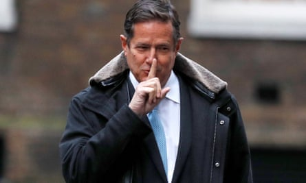
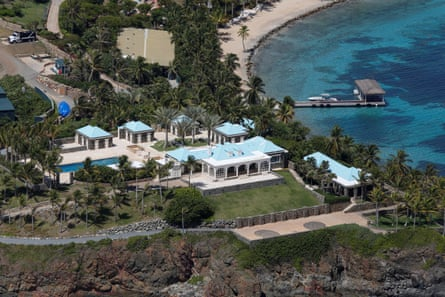
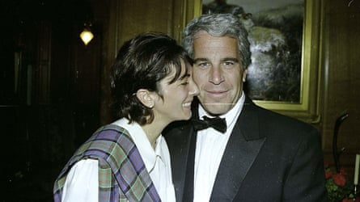
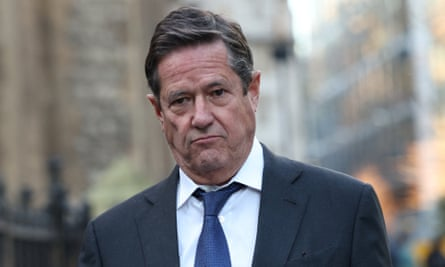

I n 1999, the future Barclays chief executive Jes Staley was gearing up for his biggest job yet. As head of JP Morgan’s private bank, he would be in charge of a sprawling team that managed money and investments for some of the world’s richest people.
Among them was the mysterious but well-connected billionaire Jeffrey Epstein , with whom he would quickly develop a “fairly close professional relationship”.
Staley was soon holidaying on Epstein’s private island, flying on his private plane, and gaining access to an impressive portfolio of ministers, entrepreneurs and royalty. The relationship ended up bolstering Staley’s profile on Wall Street and even connecting his daughter to senior figures at Ivy League universities.
It also helped to end his career.
In July 2019, Epstein was arrested on child sex trafficking charges, accused of sexually exploiting and abusing dozens of girls at homes in Manhattan and Palm Beach, Florida. Some victims were as young as 14, US prosecutors alleged. Epstein, who was in jail as he awaited trial, was found dead in his prison cell weeks later.
The revelations about Epstein led to a media storm, bringing renewed attention to his former friends and business associates, including Staley. Barclays told the Financial Conduct Authority in October 2019 that the pair “did not have a close relationship” and were last in contact “well before” Staley took over as chief executive four years earlier.
But a subsequent FCA investigation, involving a cache of 1,200 emails from JP Morgan , convinced the regulator it had been misled. It alleged that the pair were indeed close friends and stayed in touch via Staley’s daughter for years after he joined Barclays.
Jes Staley arrives at 10 Downing Street in January 2018.Photograph: Peter Nicholls/Reuters
It was not Staley’s first run-in with the FCA, having been fined £642,000 for trying to unmask a whistleblower in 2018. It was, however, the final straw: he was issued a fine of £1.8m and banned from holding senior management roles in the City in 2023, leading to him losing about £18m worth of pay.
The 68-year-old fought back in an appeal this spring , arguing that he had always been transparent with Barclays and had followed internal legal advice on the letter’s phrasing, which was meant to emphasise that he had no knowledge of Epstein’s crimes. Judges on Thursday ruled in the FCA’s favour , upholding the lifetime City ban.
March’s two-week tribunal hearing in London also gave the first public account of Epstein’s role in Staley’s life. This is what the court heard.
The pair did not meet by chance, but on the recommendation of JP Morgan’s then chief executive, Douglas “Sandy” Warner, who felt that Epstein – already a client – was someone the newly appointed head of the private bank should know.
The pair “got on well”, according to Staley’s lawyers, and Epstein’s career-boosting potential quickly became clear. He would refer wealthy friends to Staley, many of whom turned into JP Morgan clients.
The two men occasionally socialised, Staley said, explaining that he would sometimes swing by Epstein’s home in Manhattan for a drink or dinner. And, from 2005, he took his family on the first of a handful of trips to Epstein’s Caribbean island, Little St James.
Staley was adamant that Epstein was never part of his inner circle, was never invited to the family home, any “milestone birthdays”, or “personal meals in restaurants”. Staley said he had few personal friends and remains a loner. “From what I recall, Jes didn’t have very many friends,” his former chief of staff Sasha Wiggins told the court in March.
And Staley said parts of Epstein’s life always remained a mystery. “I really didn’t know how much money he had,” Staley said. “What his background was, was always sort of shrouded.”
One of Jeffrey Epstein’s properties on his private island, Little St James, US Virgin Islands.Photograph: Marco Bello/Reuters
By 2006, the mask started to slip. Epstein was arrested after police in Florida were tipped off that he was recruiting young girls for massages and sexual encounters. He pleaded guilty to soliciting prostitution from a minor and in 2008 he was sentenced to 18 months in jail.
Staley stayed in contact, though, and visited Epstein after his indictment. He said Epstein did not deny that he solicited a prostitute, but maintained that he thought the girls were over 18. “Obviously he lied to me,” Staley told the court in March.
He visited Epstein again in around 2009, when he was on a prison work release programme in Florida. Staley said he reported the visit to JP Morgan, which was reviewing whether to keep Epstein as a client.
But emails suggest he had been leaning on the imprisoned Epstein for advice throughout the financial crisis, writing in October 2008: “I am dealing with the Fed on an idea to solve things. I need a smart friend to help me think through this stuff. Can I get you out for a weekend to help me (are they listening?).”
Jeffrey Epstein in a photo taken in 2017 for the sex offender registry in New York.
The court heard that Staley turned to Epstein to help connect his daughter – a physics major – with scientists and senior professors at Ivy League universities. The financier, who Staley referred to as “Uncle Jeffrey”, would later be invited to her graduation in 2015. Staley stressed that he did not then know of Epstein’s crimes.
Wiggins told the court: “Mr Staley said to me once: ‘Why would I have introduced my wife and daughters to Mr Epstein if I thought he was a paedophile?’ ”
When Epstein was released on house arrest in July 2009, Staley was one of the four people he emailed to say: “Free and home.” Staley replied: “I toast your courage !!!!!”
But more cryptic messages between the two stirred the most controversy, including an exchange about Disney princesses in July 2010. “That was fun. Say hi to Snow White,” Staley wrote. “What character would you like next?” Epstein asked, to which Staley replied: “Beauty and the Beast.” “Well one side is available,” Epstein responded. Staley told the court he was not able to explain the exchange.
Months earlier, in September 2009, Epstein emailed a woman to say: “Jes staley is staying at the berkeley hotel in London tonight.” Staley said he could not recall the reason behind the message.
That year Staley’s career took another leap, with his promotion to lead JP Morgan’s investment bank. Even the chief executive, Jamie Dimon, was singing his praises, telling Fortune magazine : “Jes has impeccable character and integrity.”
Jeffrey Epstein with the British socialite Ghislaine Maxwell.Photograph: Zuma Press/Alamy
The new role meant Epstein was no longer a direct client. But that did not end their relationship, or Staley’s effusive messages.
In November 2009, Staley detoured from a work trip to visit Epstein’s ranch in New Mexico, replete with a 26,700sq ft mansion, private airstrip, and seven-bay heated garage. He emailed Epstein in thanks: “So when all hell breaks lose [sic], and the world is crumbling, I will come here, and be at peace. Presently, I’m in the hot tub with a glass of white wine. This is an amazing place … I owe you much. And I deeply appreciate our friendship. I have few so profound.”
In December, months after Epstein’s release, the pair finally found time to meet in person. “I realize the danger in sending this email. But is [sic] was great to be able, today, to give you, in New York City, a long heartfelt hug. To my friend, Thanks. Jes.”
At times, their emails were more explicit: discussing sex scandals and lovers. One message, sent from a debutante ball that Staley attended in November 2010, told Epstein that Staley had seen “your lover … she says u slept with her!!”
Epstein separately sent photos, one of which was of a woman in a low-cut ballgown. “You were with Larry, and i had to put up with …,” Epstein wrote.
When FCA lawyers suggested this interaction was a sign that he and Epstein were “personally close”, Staley said such behaviour was not uncommon between people who were “professionally close – you know, if you’ve ever worked on a trading floor on Wall Street”.
Staley said there were parts of his life he kept from Epstein, including having sex with a member of Epstein’s staff . “Oftentimes I would go to Epstein’s apartment and he would be late, and she and I got the chance to know each other.” This led to sexual intercourse, he said, “much to my embarrassment today”.
The former banker, who has a wife and two daughters, said the confession came at a personal cost. “I have been honest such that I have put my marriage at risk … I have never shied away from telling the truth about all of this.”
The date of the encounter was not disclosed in court, but the FCA revealed that Epstein’s former employee had “carved” Staley out of a settlement she had reached with Epstein’s estate. “I was not aware of that,” Staley told the court.
Despite the allegedly secret encounter, Epstein and Staley would send messages declaring their close ties, referring to each other as family. In one exchange in March 2011, Epstein writes: “Told you −−−− family.” Staley replied with one word: “Family”.
Behind the scenes, Epstein’s banking relationship with JP Morgan was starting to unravel.
The bank was considering dumping Epstein as a client but was careful about broaching the issue with Staley, saying they were friends. “He needs to understand the potential backlash to the firm given all the work done to root out clients involved in human trafficking,” an internal memo said.
Jes Staley leaving court in March 2025 following the first day of his tribunal appeal.Photograph: Isabel Infantes/Reuters
Staley tried to convince the bank’s top lawyer to “hear [Epstein] out”, according to a JP Morgan meeting note. He also revealed to Epstein that his transactions were under review. Staley admitted to sharing internal information with Epstein but denied having pushed the bank to keep him as a client.
Panic had set in by September 2009, when Epstein told Staley a “family meeting was required”. Epstein was concerned about an “abusive reporter”, and instructed Staley on how to respond: “I think your response should be [that] all of the incidents that they raise happened a decade ago, I paid my debt and like everyone else should be given another chance.”
Epstein said he had been “unaware of the full heat that you have taken as a result of our friendship”, adding: “I’m sorry.”
Epstein hired a London lobbyist for a 2012 campaign to make Staley Barclay’s chief executive, dubbed “Project Jes”. In emails, the lobbyist claimed he hoped to convince top-level policymakers, including George Osborne, who was the then chancellor, and Mervyn King, the Bank of England governor, to support Staley. The banker said he never knew about the push.
Barclays ultimately installed its own head of retail and business banking , Antony Jenkins, whose ousting three years later led to Staley’s leadership.
In early 2013, Staley left JP Morgan, moving to the hedge fund Blue Mountain Capital. At this point, Staley claimed, his relationship with Epstein started to decline.
But the FCA alleged that their communication did not wither, pointing to a string of emails in early 2013 in which the pair discussed dinner plans, new work phone numbers and planned meet-ups. Staley also kept up an annual tradition of emailing Epstein on New Year’s Eve.
The declarations of friendship continued in January 2015, when Staley told Epstein: “The strength of a Greek army was that its core held shoulder to shoulder, and would not flee or break, no matter the threat. That is us.”
That year, Epstein was back in the media’s crosshairs. An anonymous woman had filed a lawsuit alleging she was repeatedly sexually abused by Epstein between 1999 and 2002, and that he had loaned her out to rich and influential men.
By April that year, Staley had what he says was his last in-person meeting with Epstein, having again taken his family to visit the financier’s private island. “Thanks for the flight and thanks for the lunch. Your place is crazy, and special … I count u as a deep friend. The girls seemed to enjoy the sail. All the best Jes.”
Within months, Staley was taking another stab at the Barclays job, and kept Epstein abreast of developments. Weeks before the appointment, Staley emailed: “Cross your toes !!!”
Staley was back in touch days before receiving his Barclays contract: “We’re very close.”
The British tabloids, however, were circling, having already pounced on another prominent figure with ties to the convicted sex offender.
News of Prince Andrew’s relationship with Epstein had caused a media frenzy as early as 2011 , years before a disastrous BBC interview that led to the prince being forced to step back from public duties in 2019.
Days before Staley was confirmed as Barclays’ new boss, the Mail on Sunday was chasing up claims that Epstein lobbied Barclays to hire Staley in both 2012 and 2015. Epstein forwarded the newspaper’s queries to Staley, who later replied: “Ok. I’m going to play is [sic] simple. I’ve known you as a client. I will tell B tomorrow. Let me know if they say something else. But stay away from them. I’m fine.”
The article was published with the headline: “Andrew’s billionaire paedophile friend secretly backed new Barclays boss for job”.
Staley said he cut contact with Epstein days later, following “strong advice” from Barclays. “I telephoned Mr Epstein and told him that we could not ever again have communication, which he accepted. The relationship ended there. I have had no communication with him since then,” Staley told the court.
There is no evidence of direct contact between the two men after October 2015, but the FCA alleged they stayed in touch via Staley’s daughter until at least February 2017.
Emails show that Epstein asked Staley’s daughter to ask the newly installed chief executive’s opinion on other bankers, to try to connect Staley with royalty in the Middle East, and to ask whether Staley was interested in a post with the US Treasury. Staley said he did not recall any of those conversations, and he did not realise at the time that his daughter and Epstein were still corresponding.
The tribunal on Thursday raised concerns in its judgment about Staley’s evidence, saying he “could be inconsistent in his answers when he felt that it would suit his case”, adding that he had “shown no remorse for his conduct”.
Judges have sided with the FCA, upholding its City ban and scuppering efforts to restore his reputation.
And while the tribunal reduced his fine from £1.8m to £1.1m, this was to reflect pay he lost from Barclays as a result of the FCA ruling. It is not clear how much Staley has paid in legal costs trying to challenge the UK regulator.
Staley said in a statement: “I am disappointed by the outcome and the time it took for this process to play out – that was entirely beyond my control. As the tribunal accepted, I was never dishonest. It took years of arguing with the authority and until November 2024 to establish that fact, and it took more time for the financial penalty to be reduced by 40%.
“I have worked tirelessly for my prior employers for the entirety of my career. I am proud of the support I gave to many individuals during that career and the strategy I developed to help Barclays when it faced immense challenges. The tribunal recognised what they described as ‘my long and distinguished career’.”